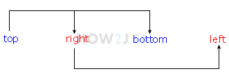

如果缺少左内边距的值，则使用右内边距的值。 如果缺少下内边距的值，则使用上内边距的值。 如果缺少右内边距的值，则使用上内边距的值。 举例说明 这是完整4个的 padding: 10 20 40 80 如果只有3个 padding: 10 20 40 那么left取right padding: 10 20 40 = padding: 10 20 40 20 如果只有两个 padding: 10 20 那么bottom取top，left取right padding: 10 20 = padding:10 20 10 20 如果只有一个 padding:10 那么right取top，bottom取top，left取top padding:10 = padding:10 10 10 10